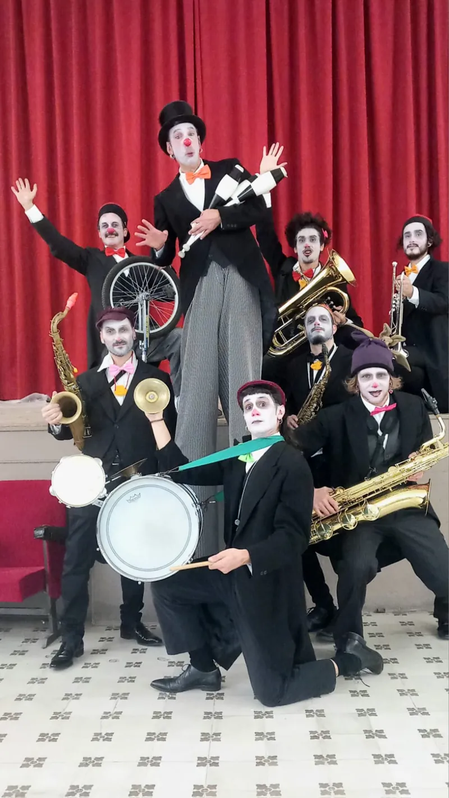
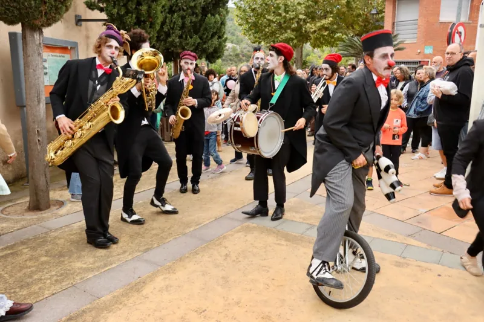
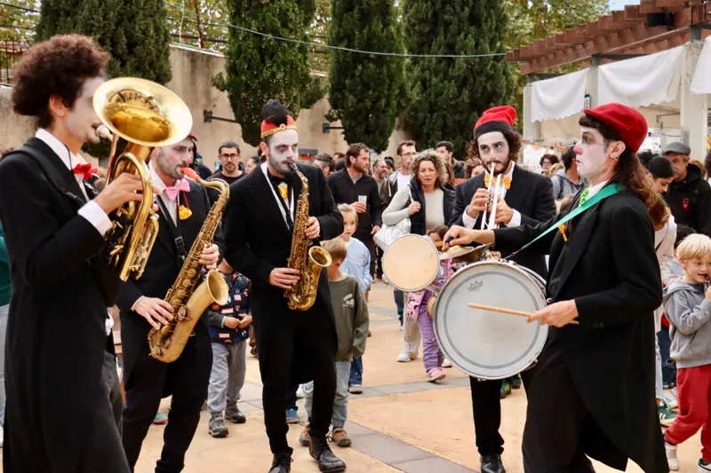
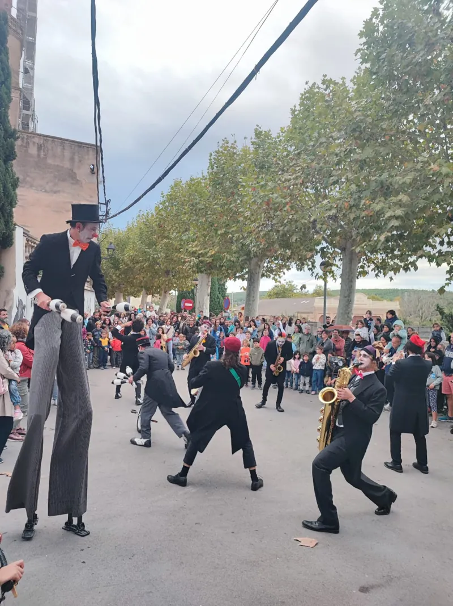
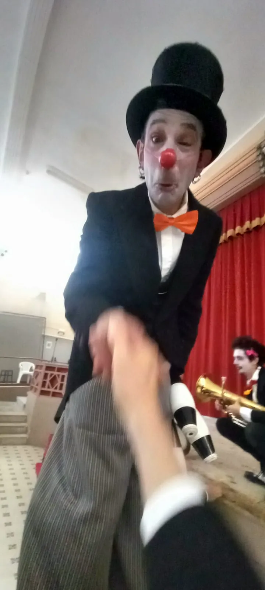
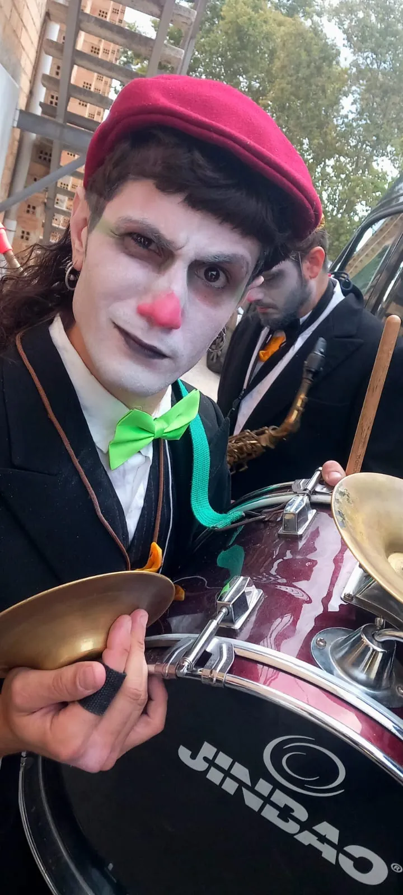
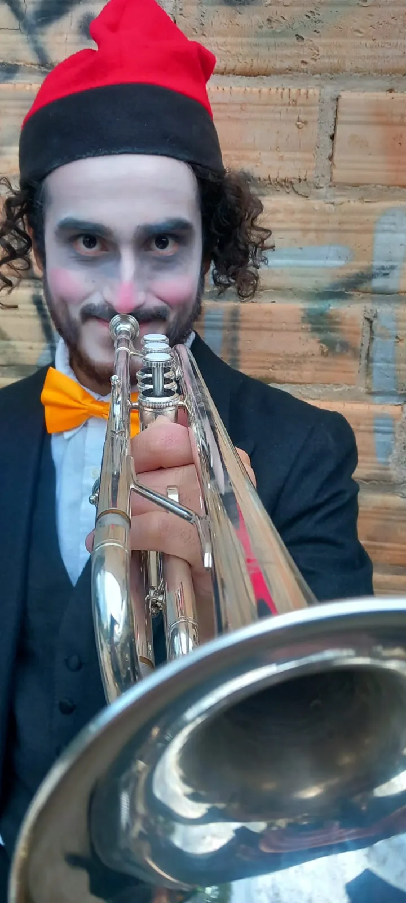
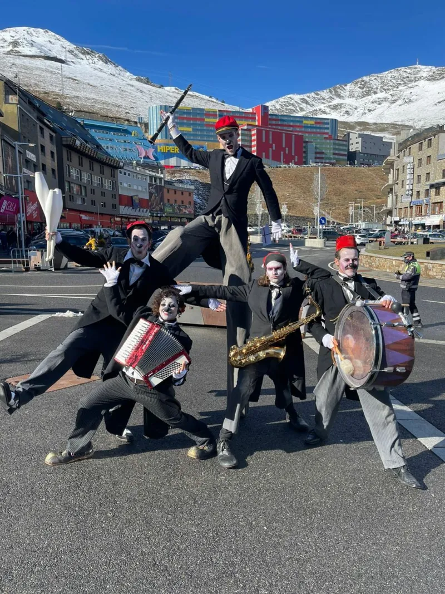
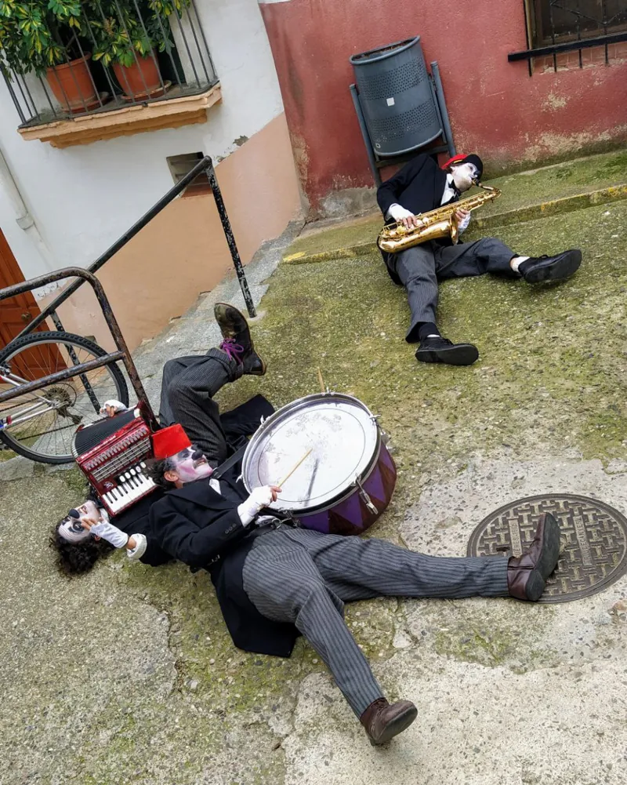
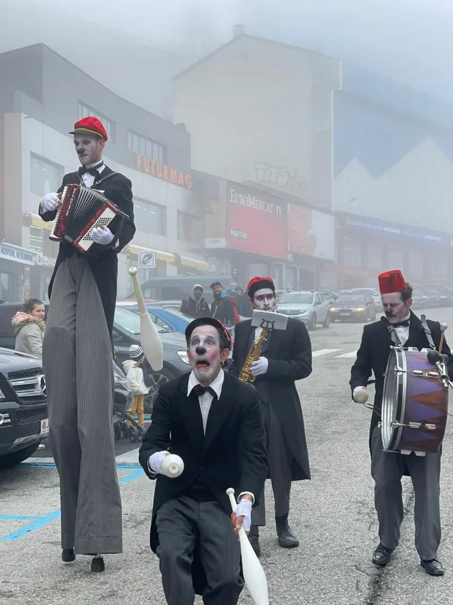

Koproduktion mit der Cia. Filigranes
Freak Frac
Walkact mit Live-Musik, Stelzen, Jonglage und Seilspringen
Eine Truppe sehr großer clownesker Figuren zieht hinter der Band und ihrem Dirigenten durch die Straßen. Unterwegs halten sie an, jonglieren mit Keulen und Diabolos und springen Seil, immer mit Live-Musik. 2013 entstanden bei der Cia. Filigranes und dem Zirkusverein Tub d'assaig.
Ideal für Messen, Märkte, Umzüge und Karneval, wo der Kontakt mit dem Publikum an erster Stelle steht.
Freak Frac ist ein Umzug. Ein Umzug ist eine Show, die durch die Straßen geht.
Es gibt sehr große Figuren auf Stelzen. Sie gehen hinter einer Band.
Sie jonglieren und springen Seil.
Freak Frac ist von der Cia. Filigranes. Wir machen die Show zusammen.
Steckbrief
- Draußen oder drinnen
- Für alle Altersgruppen
- Dauer und Besetzung passen sich der Veranstaltung an
- Vorbereitung: 1 Std. 30 Min.
Downloads
Freak Frac
Infos und Dossier bei ciafiligranes.net



















Termine der Show
Demnächst
- Pas de la Casa (Andorra) Freak Frac
- Cavalcada de Reis, Roses Freak Frac
- Andorra Freak Frac
Neue Termine folgen bald.
Wir waren schon bei
- Festival Clownic, Torrelles de Foix Freak Frac
- Tub d'assaig, Terrassa & Sant Quirze del Vallès Freak Frac
- Casal de les Fonts, Terrassa Freak Frac